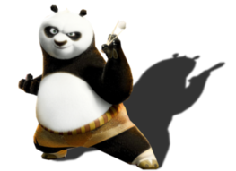
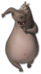
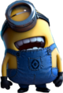

| Kung Fu Panda | Madagascar | Moi Moche et Méchant |
|  |  |  |
Passionné, costaud et quelque peu maladroit, Po est sans conteste le plus grand fan de kung fu. Serveur dans le restaurant de nouilles de son père, son habileté reste encore à prouver.Elu pour accomplir une ancienne prophétie, Po rejoint le monde du kung fu afin d'apprendre les arts martiaux auprès de ses idoles, les légendaires Cinq Cyclones : Tigresse, Grue, Mante, Vipère et Singe, sous les ordres de leur professeur et entraîneur, Maître Shifu.Mais Taï Lung, le léopard des neiges fourbe et animé d'un désir de vengeance, approche à grands pas, et c'est Po qui sera chargé de défendre la vallée face à cette menace grandissante. |
Lorsqu'un lion, un zèbre, une girafe, un hippopotame et une poignée de pingouins psychotiques fuient leur zoo new-yorkais pour secourir l'un des leurs, l'aventure s'écrit avec un grand A. Et lorsque le destin les réunit sur l'île de Madagascar, ils doivent apprendre en formation accélérée les rudiments de la vie à l'air libre. |
Dans un charmant quartier résidentiel délimité par des clôtures de bois blanc et orné de rosiers fleurissants se dresse une bâtisse noire entourée d’une pelouse en friche. Cette façade sinistre cache un secret : Gru, un méchant vilain, entouré d’une myriade de sous-fifres et armé jusqu’aux dents, qui, à l’insu du voisinage, complote le plus gros casse de tous les temps : voler la lune (Oui, la lune !)...Gru affectionne toutes sortes de sales joujoux. Il possède une multitude de véhicules de combat aérien et terrestre et un arsenal de rayons immobilisants et rétrécissants avec lesquels il anéantit tous ceux qui osent lui barrer la route... jusqu’au jour où il tombe nez à nez avec trois petites orphelines qui voient en lui quelqu’un de tout à fait différent : un papa.Le plus grand vilain de tous les temps se retrouve confronté à sa plus dure épreuve : trois fillettes prénommées Margo, Edith et Agnes. |